这款牛奶吐司用了“爱和自由”姐的方子，果然是零失败！豆子爸爸觉得烤一只吐司很浪费，这个意见得到了豆麻的强烈支持，于是把方子里的量全部两倍，结果忽略了面包机的最大量，把面包机累瘫了。。哈哈。
用料
- 面包粉 270克
- 干酵母 3克
- 细砂糖 40克
- 盐 4克
- 蛋液 32克
- 牛奶 138克
- 黄油 27克
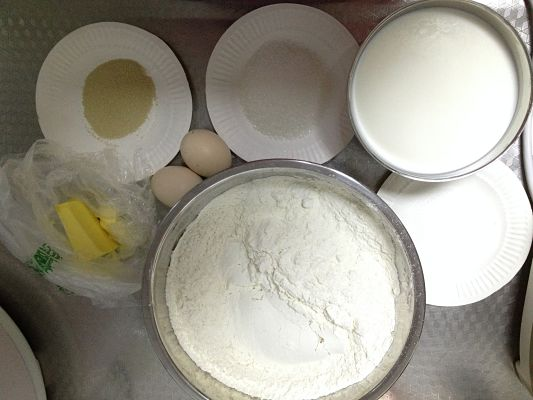
做法
1. 扩展阶段
将除黄油以外的原料全部放入面包机，揉面30分钟，揉至扩展阶段（盐与酵母一定分别放在不同的角上，盐会杀死酵母菌，这一点很重要）。
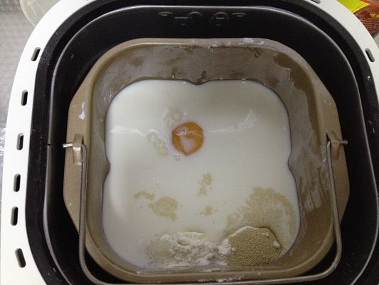
2. 完全阶段
加入黄油，继续揉面至完全阶段（撑起一部分面会出现透明的膜，破裂后边缘整齐即可）PS：糅出鸭蹼是制作吐司最关键的步骤，耐心点巧劲揉，由于面包机瘫痪虽然后来又歇好了，这个步骤是半手工半机器揉的，耗时大约30分钟。
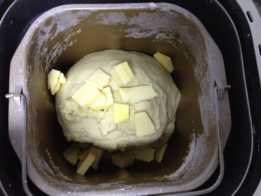
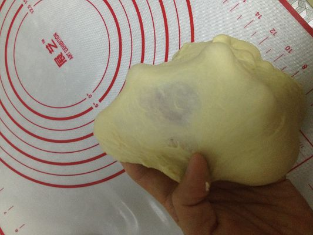
3. 基础发酵
将揉好的面团，放在温暖处进行基础发酵，判断发酵结束与否的标准是，面团膨胀至2倍大，手指沾干面包粉插入无粘连，小洞不会消失，面团不塌陷。
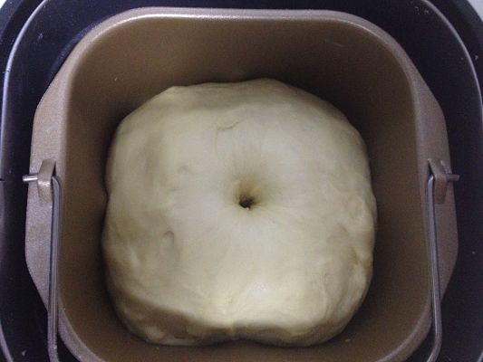
4. 排气松弛
基础发酵结束后，将面团排气并等分为4份，滚圆后松弛15分钟。
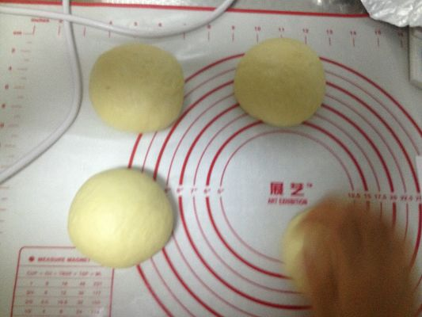
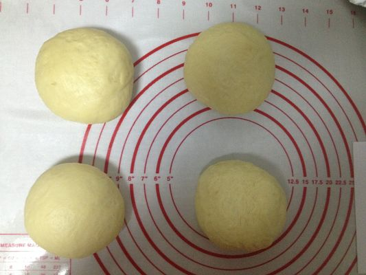
5. 擀面折叠
将松弛后的面团擀成椭圆形，翻面后自上、下各1/3处向内折。
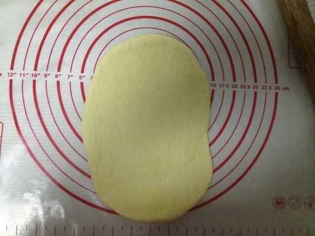
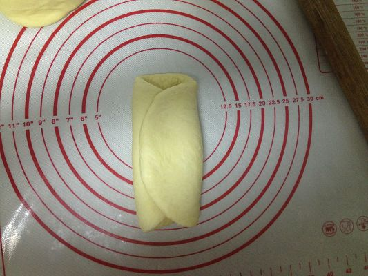
6. 擀面卷卷
将叠好后的面团擀长，压薄短底边，自上而下擀成卷。
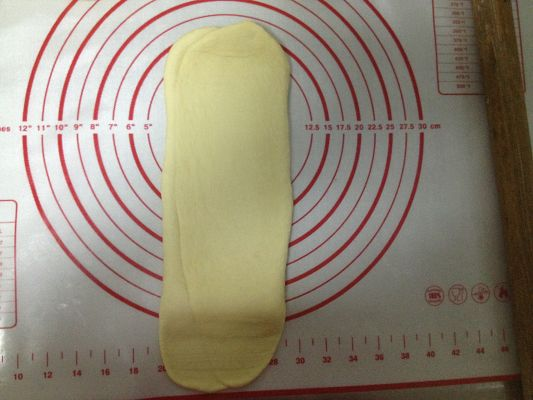
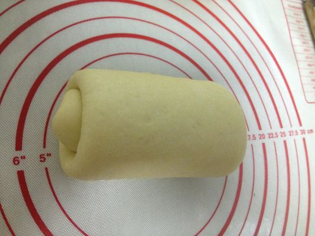
7. 最后发酵
将卷好的面团放入吐司模具中，在温暖湿润处进行最后发酵 PS：一直纠结如何保持湿润，又嫌烤箱发酵麻烦，索性直接盖上保鲜膜，直接放在暖气片上了，哈哈效果不错。
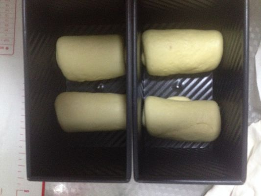
8. 烘焙阶段
最后发酵结束后（面团膨大为模具的八分满），放入预热180°的烤箱底层，上下火烘焙35分钟，烘焙过程中如果表面上色较快，可以盖一张锡纸。
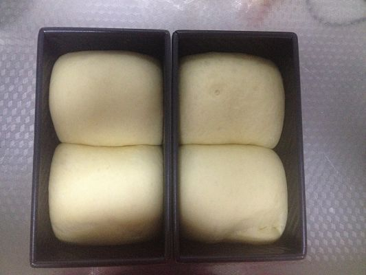
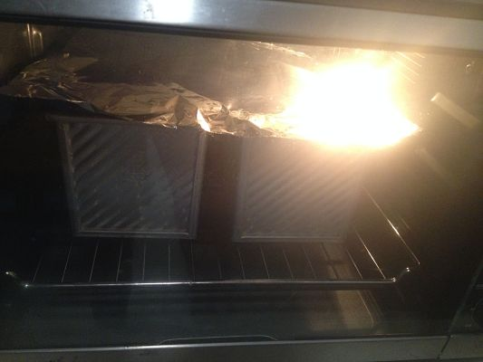
9. 脱模冷却
出炉后立即脱模，在烤网上放凉。
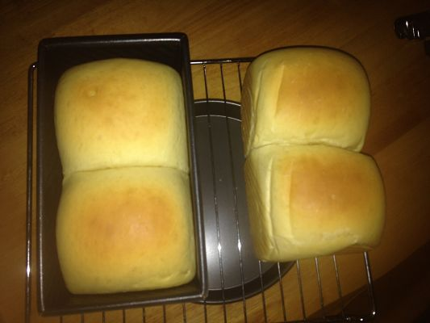
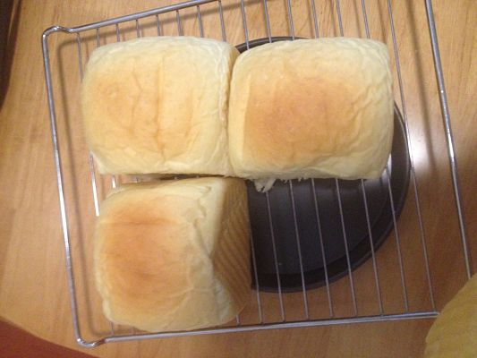
10. 赤裸炫耀
其实这款吐司完全不用切片，直接手撕吃更爽，看这柔韧性极好的内部组织！
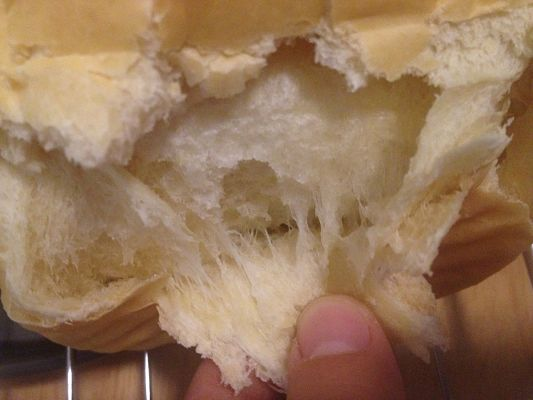